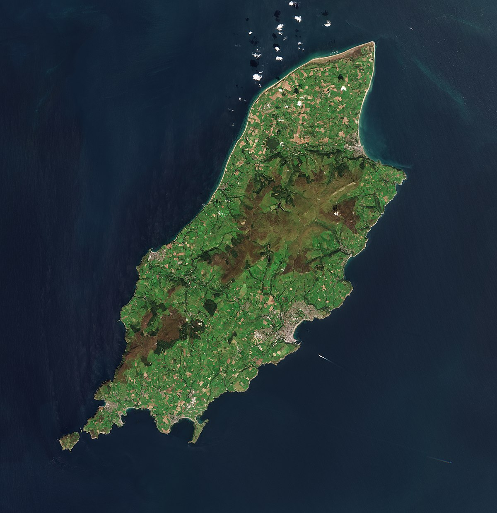
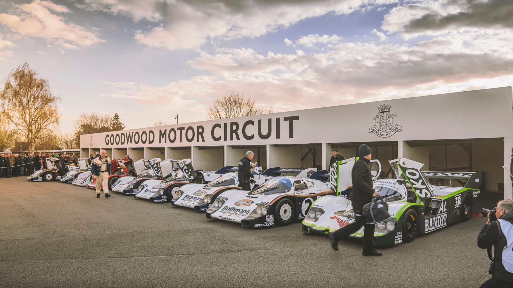
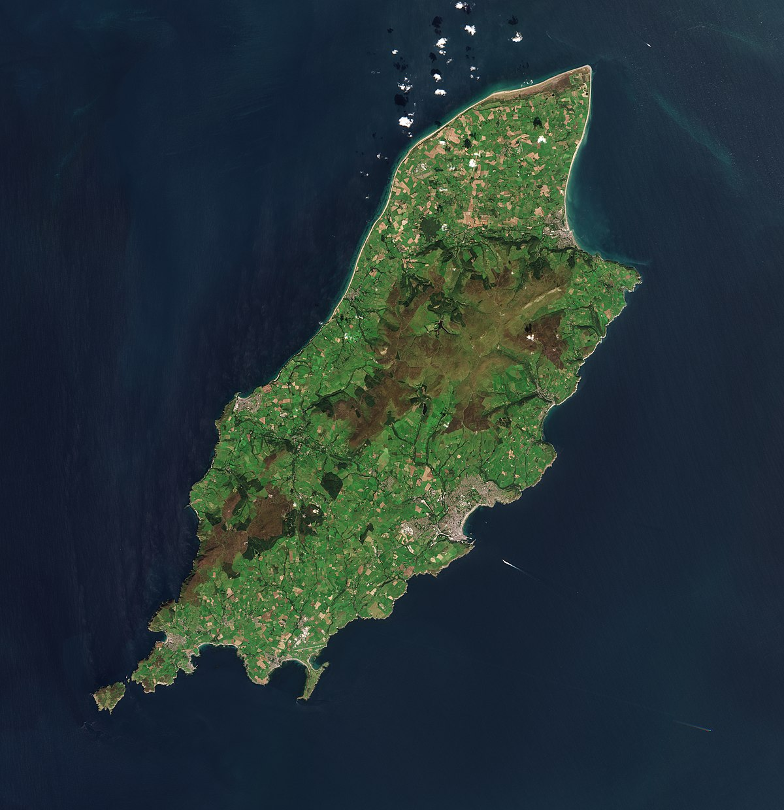
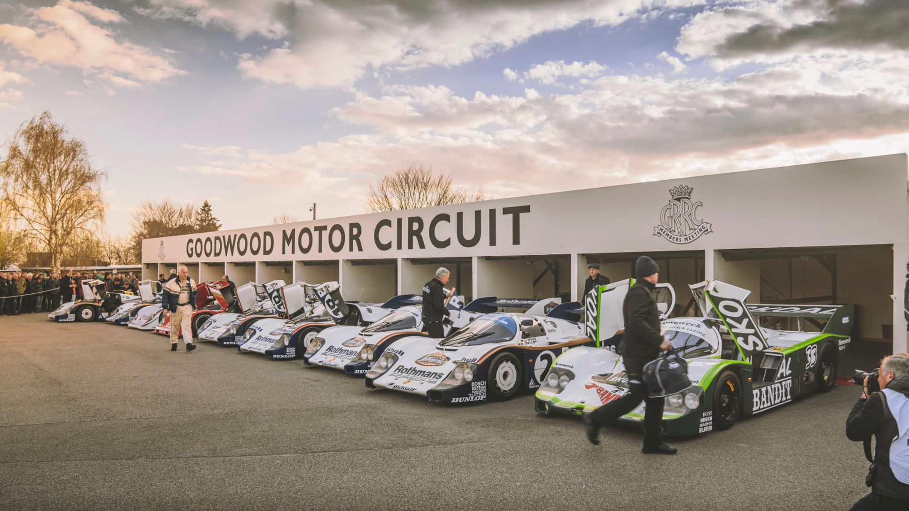

Isle of Man TT
Una de las carreras más antiguas y peligrosas del mundo, celebrada en la Isla de Man.
Goodwood Festival of Speed
Un evento anual que celebra la velocidad y el diseño de motos y autos clásicos.
Una de las carreras más antiguas y peligrosas del mundo, celebrada en la Isla de Man.
Un evento anual que celebra la velocidad y el diseño de motos y autos clásicos.
